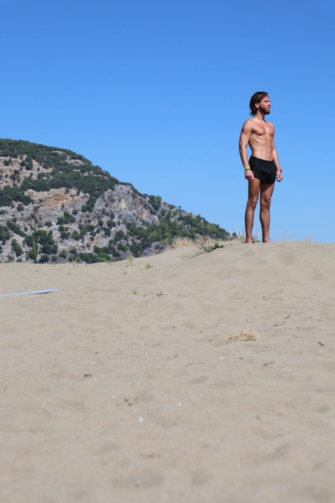

Привет, я Николай
Бегун, шахматист и ищущий человек. Через движение, стратегию и духовность я нахожу баланс в жизни.
Бегун, шахматист и ищущий человек. Через движение, стратегию и духовность я нахожу баланс в жизни.
Мои тренировки и достижения
Регулярные тренировки и участие в забегах. Бег для меня - это медитация в движении и способ поддерживать физическую форму.

Стратегии, партии и анализ
Анализ сыгранных партий, изучение дебютов и тактических приемов. Шахматы учат мыслить стратегически и принимать взвешенные решения.

Духовный путь и размышления
Молитва как способ обретения внутреннего покоя и связи с высшими силами. Здесь я делюсь своими духовными insights и размышлениями.
